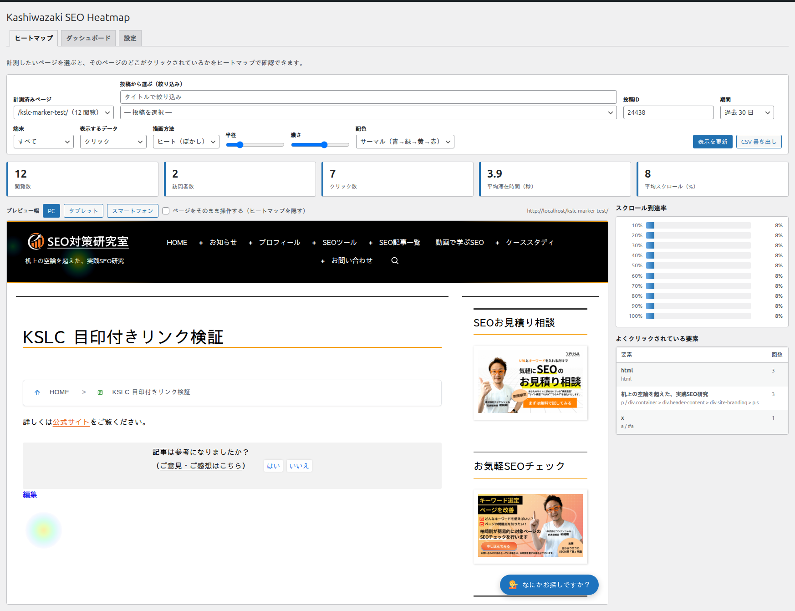
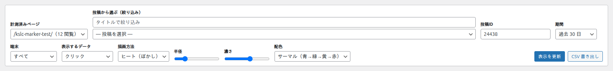
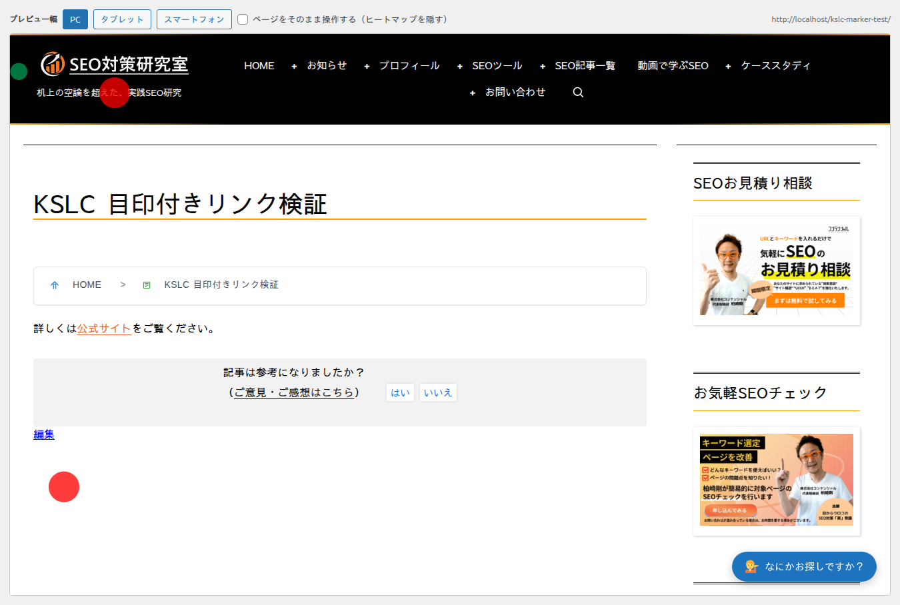
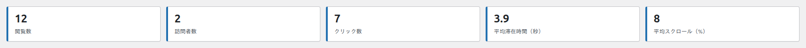
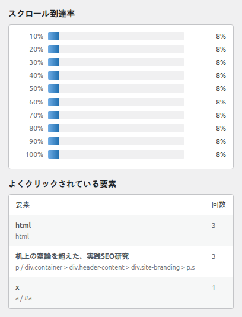
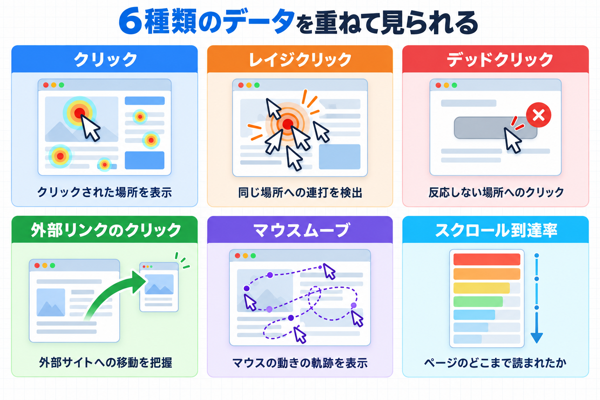
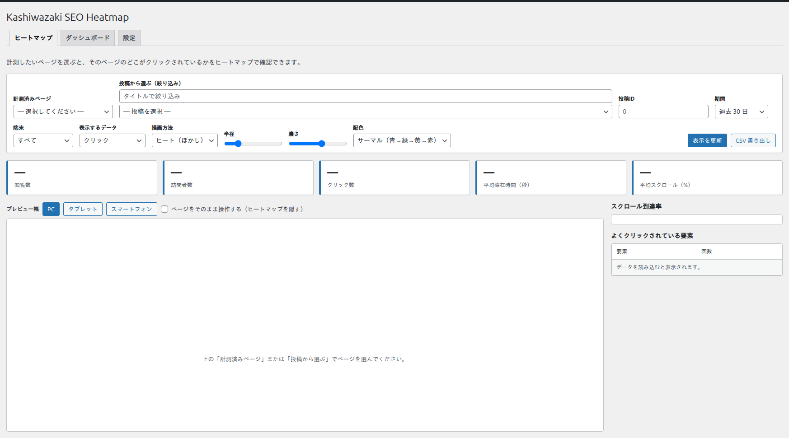

ヒートマップ画面
計測したいページを選ぶと、そのページのどこがクリックされているかをヒートマップで確認できます。
この画面では、1 つのページを選んで、その上にクリックの分布を色で重ねて表示します。座標のほかに、押された要素の一覧や、スクロールの到達率も見られます。表示する条件は上部のツールバーで切り替えます。

画面の地図
この画面は大きく 4 つの領域に分かれています。見出しのすぐ下のタブで、ダッシュボード・設定の画面に移れます。
| 番号 | 領域 | 内容 |
|---|---|---|
| ① | ツールバー | ページの選びかた、期間・端末・データの種類・表示方法などの条件を選びます。 |
| ② | 指標カード | 閲覧数・訪問者数・クリック数・平均滞在時間・平均スクロールの 5 つの数値を表示します。 |
| ③ | プレビュー | 選んだページをそのまま表示し、クリックのヒートマップを重ねます。 |
| ④ | 右側の一覧 | スクロール到達率のグラフと、よくクリックされている要素の一覧を表示します。 |
ツールバーの各項目

計測済みページ
何をするものか: すでにデータが集まっているページの中から、表示したいページを選びます。
いつ使うか: どのページを見るか決まっているときに使います。「タイトル（閲覧数 閲覧）」の形で並び、閲覧数の多い順に表示されます。はじめは「— 選択してください —」が選ばれています。
投稿から選ぶ（絞り込み）
何をするものか: まだデータが少ないページを選ぶときに、タイトルの一部を入力して候補を絞り込みます。
操作手順: 入力欄にタイトルの一部を入力すると、すぐ下の「（投稿を選択）」の候補が絞られます。
（投稿を選択）
何をするものか: 絞り込んだ候補の中から、表示したい投稿を選びます。「[投稿タイプ] タイトル」の形で表示されます。選ぶと、そのページがプレビューに読み込まれます。
投稿ID
何をするものか: タイトルではなく投稿 ID を直接指定してページを選ぶ方法です。
入力できる範囲: 半角の数値です。はじめは「0」で、0 のときは何も選ばれていません。
「計測済みページ」「投稿から選ぶ」「投稿ID」は、どれか 1 つでページを選べば十分です。データがあるページを見たいときは「計測済みページ」、まだデータがないページを開いて動きを見たいときは「投稿から選ぶ」が便利です。
期間
何をするものか: どのくらい前までのデータを集計するかを選びます。
既定値: 過去 30 日
| 選択肢 | 集計される範囲 |
|---|---|
| 今日 | 今日 1 日分だけを集計します。 |
| 過去 7 日 | 直近 7 日分を集計します。 |
| 過去 30 日 | 直近 30 日分を集計します（既定）。 |
| 過去 90 日 | 直近 90 日分を集計します。 |
| 過去 180 日 | 直近 180 日分を集計します。 |
| 過去 1 年 | 直近 1 年分を集計します。 |
端末
何をするものか: パソコン・スマートフォンなど、どの端末のデータを見るかを選びます。
既定値: すべて
| 選択肢 | 表示されるデータ |
|---|---|
| すべて | すべての端末のデータを合わせて表示します（既定）。 |
| PC | パソコンのデータだけを表示します。 |
| タブレット | タブレットのデータだけを表示します。 |
| スマートフォン | スマートフォンのデータだけを表示します。 |
表示するデータ
何をするものか: プレビューに重ねるデータの種類を選びます。
既定値: クリック
| 選択肢 | 意味と用途 |
|---|---|
| クリック | ふつうのクリックの分布を表示します（既定）。 |
| レイジクリック | 同じ場所を短時間に連打した箇所を表示します。 |
| デッドクリック | 押しても何も起きなかった箇所を表示します。 |
| 外部リンク | 外部サイトへのリンクを押した箇所を表示します。 |
| マウスムーブ | マウスが動いた範囲の分布を表示します。「計測する項目」で記録を有効にしている場合に使えます。 |
| スクロール到達率 | どこまでスクロールされたかを表示します。 |
「マウスムーブ」は、設定画面の「計測する項目」で記録をオンにしていないとデータがありません。はじめはオフになっています。
描画方法
何をするものか: クリックを「色のぼかし」で表すか、「点」で表すかを選びます。
既定値: ヒート（ぼかし）
| 選択肢 | 見え方 |
|---|---|
| ヒート（ぼかし） | 色の広がりで密度を表します。全体的な傾向をつかむのに向いています（既定）。 |
| ポイント（点） | 1 件ずつ点で表します。クリックの位置を正確に見たいときに使います。 |

半径
何をするものか: 色のにじむ範囲の大きさを変えます。入力できる範囲は 5〜120 で、はじめは 28 です。数値が大きいほど、広い範囲に色が広がります。
濃さ
何をするものか: 色の濃さを変えます。入力できる範囲は 5〜100 で、はじめは 60 です。
配色
何をするものか: 色の組み合わせを選びます。
既定値: サーマル（青→緑→黄→赤）
| 選択肢 | 色の印象 |
|---|---|
| サーマル（青→緑→黄→赤） | 青から赤へ変化します。密度が高いほど赤くなります（既定）。 |
| ホット | 暖色系で表します。 |
| クール | 寒色系で表します。 |
| Viridis | 紫から黄へ変化します。色の見分けがつきやすい配色です。 |
| モノクロ | 白黒の濃淡で表します。印刷や白黒画面で見やすい配色です。 |
表示を更新
何をするものか: ツールバーで選んだ条件を反映して、プレビューと指標を描き直します。条件を変えたらこのボタンを押してください。
CSV 書き出し
何をするものか: 「よくクリックされている要素」の一覧を、CSV ファイルとしてパソコンに保存します。表計算ソフトで開いて、並べ替えや集計に使えます。
プレビュー幅（PC / タブレット / スマートフォン）
何をするものか: プレビューの幅を、パソコン・タブレット・スマートフォンの大きさに切り替えます。既定値は PC です。スマートフォンの見え方を確かめたいときに使います。
ページをそのまま操作する（ヒートマップを隠す）
何をするものか: チェックを入れるとヒートマップを非表示にして、プレビューの中のリンクやボタンを実際に操作できます。プレビューはそのままでは操作できません。リンク先を確かめたいときに一時的に使います。既定値はオフです。
URL 欄
何をするものか: プレビューしているページの URL を表示します。表示だけの欄で、直接入力はしません。ページを選ぶと自動で入ります。
指標カードの見方

| 指標 | 意味 |
|---|---|
| 閲覧数 | 選んだ期間に、そのページが表示された回数です。 |
| 訪問者数 | そのページを見た訪問者の数です。同じ訪問者が何度来ても 1 人として数えます。 |
| クリック数 | そのページで行われたクリックの合計です。 |
| 平均滞在時間（秒） | 訪問者がそのページにいた時間の平均（秒）です。 |
| 平均スクロール（%） | ページのどのくらいの高さまで見られたかの平均です。100% に近いほど、最後まで見られています。 |
スクロール到達率と要素ランキング

スクロール到達率
ページの各位置まで、訪問者の何 % がスクロールして到達したかを示します。上のほうは多くの人が見ていても、下のほうになるほど到達率は下がるのがふつうです。到達率が大きく下がる位置は、そのあたりで多くの人が離れている可能性があります。
よくクリックされている要素
そのページで押されたリンクやボタンを、回数の多い順に一覧にします。
| 列 | 意味 |
|---|---|
| 要素 | 押されたリンク・ボタンの内容です。 |
| 回数 | 押された回数です。 |
データをまだ読み込んでいないときは、要素の一覧に「データを読み込むと表示されます。」と表示されます。

データがまだ無いとき
まだどのページにもデータが無いときは、次のように表示されます。対象のページを実際に閲覧すると、数秒後にデータが現れます。

「まだデータがありません。投稿を開いて少し操作すると、数秒後にデータが表示されます。」と出るときは、次の 3 つを確かめてください。（1）計測する投稿タイプが選ばれているか、（2）対象ページを実際に閲覧したか、（3）閲覧したのが計測から除外されるユーザー（ログイン中の管理者など）ではないか。